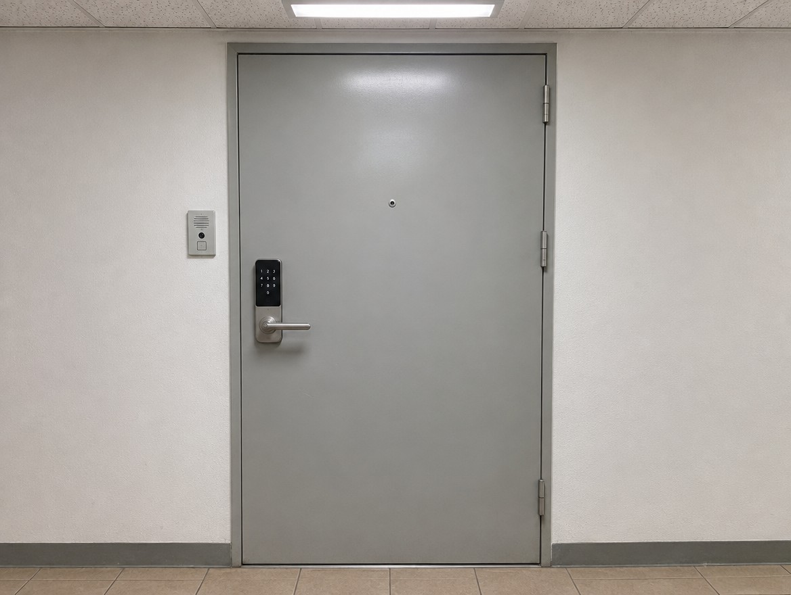
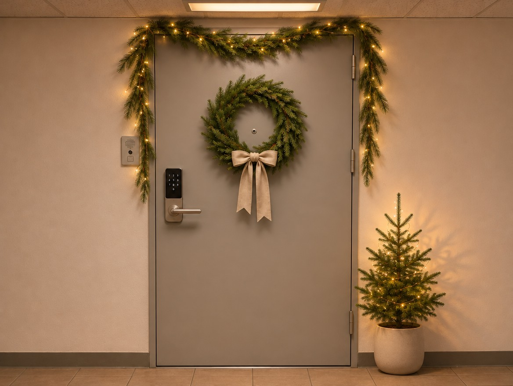
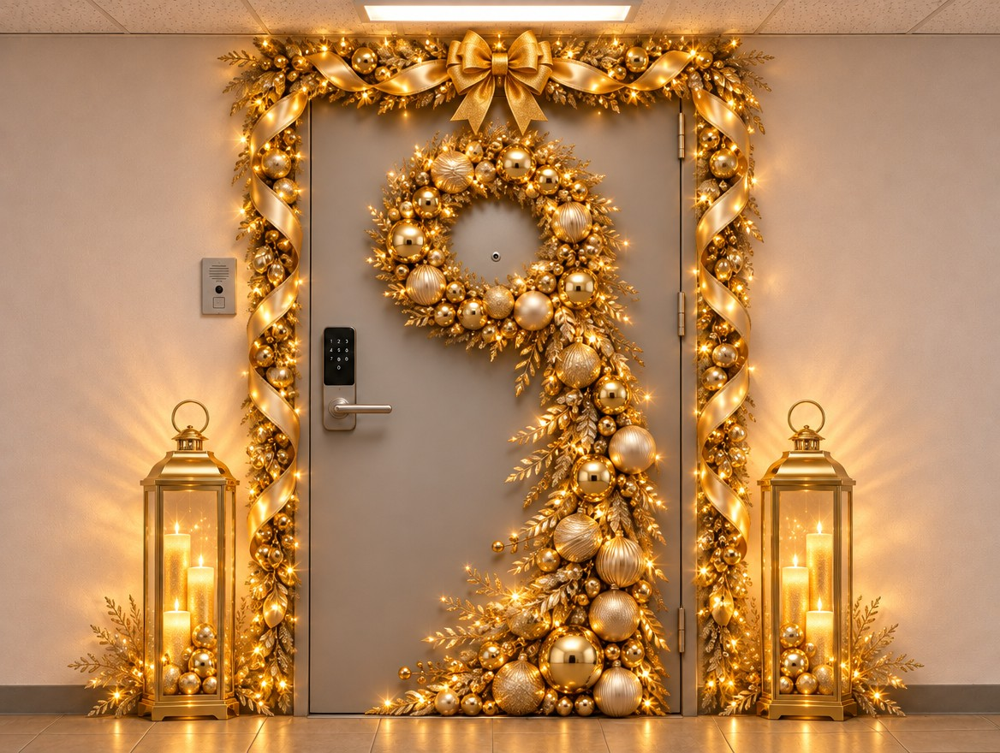
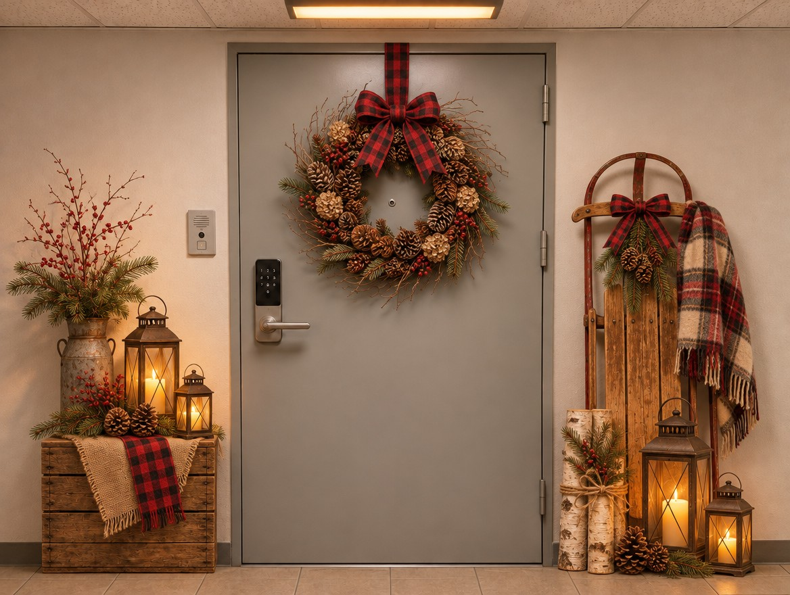
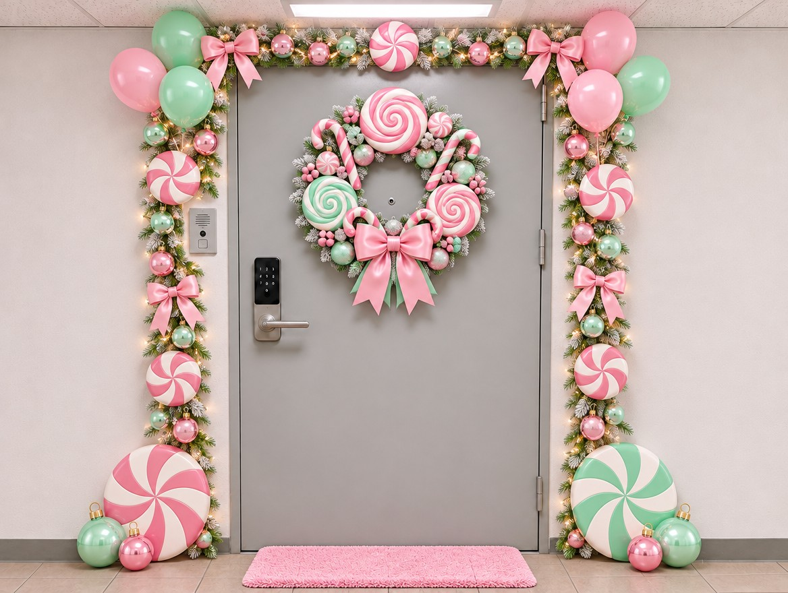

AI 문방구 · 현관 장식 5
아무것도 없는 현관문
→ 크리스마스 장식 5
댓글로 신청해주셔서 고마워요. 영상 속 현관은 전부 힉스필드(GPT Image 2.6)에 빈 현관문 사진 한 장을 넣고 장식 문장만 바꿔 만든 결과예요. 장식 사러 가기 전에 어떤 분위기가 어울릴지 미리 보는 용도로 좋아요.
BASE원본 빈 현관문 사진 (전)

01Scandinavian
솔가지와 흰 전구
솔가지 가랜드에 작은 전구, 리넨 리본 리스, 문 옆 작은 트리.
전

후Edit this photo: the exact same apartment front door, hallway, wall and floor, same camera angle and same framing. Decorate it in Scandinavian minimal Christmas style: a loose fresh pine garland draped over the door frame with tiny warm white fairy lights, a simple green pine wreath with a natural linen bow on the door, a small potted mini pine tree beside the door, cozy warm evening light. No text, no logos, no people.
02red & green
빨간 리본 리스
큰 초록 리스에 빨간 벨벳 리본, 문틀을 감싼 가랜드와 빨간 매트.
전
후
Edit this photo: the exact same apartment front door, hallway, wall and floor, same camera angle and same framing. Decorate it in classic red and green Christmas style: a big lush green wreath with a large red velvet bow and red berries on the door, thick green garland with red baubles around the whole door frame, red and white candy-stripe ribbon, a red doormat, warm festive light. No text, no letters, no logos, no people.
03gold glam
금빛 오너먼트
금색 공 장식이 문을 타고 흘러내리고 양옆에 금색 랜턴.
전

후Edit this photo: the exact same apartment front door, hallway, wall and floor, same camera angle and same framing. Decorate it in luxurious gold glam Christmas style: the door covered with a cascade of shiny gold and champagne ornaments, a gold glitter wreath, gold ribbon garland with warm sparkling lights framing the door, tall gold lanterns on both sides, glamorous glowing light. No text, no logos, no people.
04rustic woodland
솔방울과 나무 썰매
솔방울 리스, 체크 리본, 벽에 기댄 나무 썰매와 촛불 랜턴.
전

후Edit this photo: the exact same apartment front door, hallway, wall and floor, same camera angle and same framing. Decorate it in rustic woodland cabin Christmas style: a wreath made of pine cones and dried twigs, a vintage wooden sled leaning against the wall next to the door, birch logs, a plaid wool blanket, a buffalo-check red-black ribbon, lanterns with candles, warm cozy cabin light. No text, no logos, no people.
05candy pastel
분홍·민트 사탕
롤리팝 리스에 분홍·민트 풍선, 큰 박하사탕 장식.
전

후Edit this photo: the exact same apartment front door, hallway, wall and floor, same camera angle and same framing. Decorate it in playful pastel candy Christmas style: pink and mint green wreath made of giant swirl lollipops and candy canes, pastel pink and mint balloons and ornaments around the door frame, oversized peppermint candies, a pastel pink doormat, bright cheerful light. No text, no logos, no people.
HOW내 사진으로 하는 법
현관문이 정면으로 다 보이게 찍은 사진을 올리고 [ ]만 바꾸세요. "same camera angle and same framing"을 넣어야 우리 집 문 모양이 그대로 남아요. 현관 대신 거실 벽이나 창문에도 똑같이 써요.
Edit this photo: the exact same front door, hallway, wall and floor, same camera angle and same framing. Decorate it in [장식 스타일] Christmas style: [리스·가랜드·소품 설명]. No text, no logos, no people.